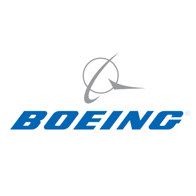
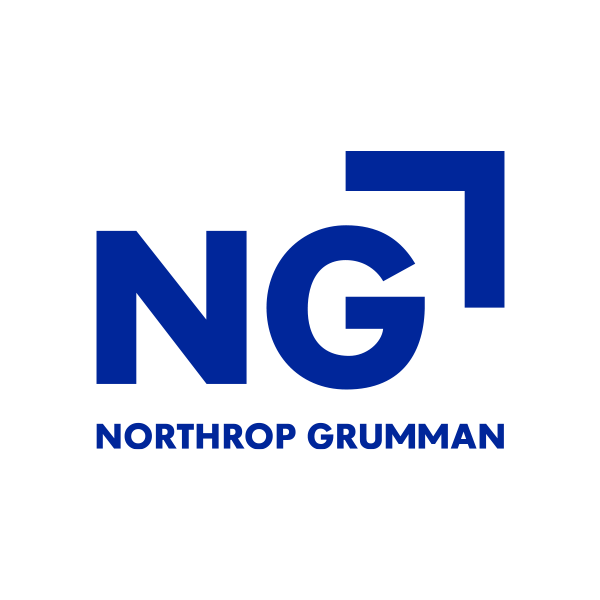

Download my resume

Top Languages
Python
C/C++
CSH/KSH/Bash/ZSH
Perl
HTML/CSS/Javascript
Education
Bachelor's of Science, Mechanical Engineering
University: UC San Diego
GPA: 4.0, First-in-class
Dates: September 2017 - June 2020
Work History

Embedded Software Engineer
Company: The Boeing company
Dates: April 2022 - Present
- Developed a Python application to auto-generate ~1000 telemetry files monthly for C++ codebase, saving 2 hours of work per testing task and 7 days of work before major releases. Added features to detect and flag inconsistencies in database vs flight software code.
- Responsible engineer for design and implementation of Telemetry, Time, Command, and MIB-sync modules in C/C++ codebase.
- In charge of development (C++) and testing (TCL/Linux) of security-related features in flight software application layer.
- Devised a real-time, configurable non-breakpoint debugging feature for FPGA communication, facilitating timely bug identification.
- Created/managed dedicated software tool repository for team including hexadecimal packet parsing app, Perl binary parsers, Python scripts to batch analyze data or quickly generate config files, monolith Linux build scripts calling Java/Python/C++.
- Streamlined developer workflow by heavily refactoring repositories and introducing CSH scripts for quick configuration changes.
- Configured and managed lighttpd web servers, SNMP, and Linux processes for team members, ensuring a smooth dev environment.
- Object-oriented TCL testing repository, reducing test code by 50% and enhancing overall test efficiency and developer productivity.
- Mentored 5 engineers on program's embedded architecture as needed, aiding in their story execution, and resolving blocking issues.
- Team expert on configuring software and using builds given task/hardware availability. Wrote build scripts for monolith/dynamic download, software uplink, and kernel. Experience loading into flash vs ram, imitating/bypassing hardware with TCP dev builds.
- Identified and resolved critical bugs in Time, Command, FPGA, Threading, and Spacewire services w/ GreenHills Multi, TCL, etc.
- Wrote High-Level-Device-Driver (HLDD) for propulsion system of new communication satellite utilizing CANOpen protocol.
- Facilitated transfer of software deliverables between Millenium Space Systems and Boeing, working on both teams simultaneously.
- Conducted all work with agile best practices using Git/Linux/Jira/BitBucket/Confluence in a story-based sprint system.

Simulation Software Engineer
Company: Northrop Grumman Corp.
Dates: September 2020 - April 2022
NASA James Webb Space Telescope
- Wrote MATLAB class-based toolkits to read-in/standardize NASTRAN mass and inertial tensor data and deployment analysis.
- Proposed, developed, and continually updated a RedHat Linux supercomputing cluster guide for dynamics-related workflows.
- Conducted NASA task order on solar array deployment anomaly contingency planning and gave tech talk to 50+ engineers.
Various Programs
- Developed KSH shell scripting for NASTRAN/MATLAB processes to automate 100’s of loads analysis simulation runs.
- Modernized a 15-year-old analysis process using internal PhD research papers to develop MATLAB class for low-level vibration characterization. Involved ~300 GB data management, signal processing, noise removal, filtering, transformation, and verification.
- Traveled to customer facilities representing company as a specialist to facilitate accurate data collection during satellite transport.
Computer Vision Software Engineer Intern
Company: HP Inc.
Dates: June 2020 - September 2020
- Developed/validated an automated Java/Python pipeline to analyze microfluidic R&D videos ~100x quicker with improved accuracy.
- Packaged Python code into an HP proprietary tool class allowing for easy adaptation and advanced visualization for future engineers.
- Wrote an interactive Python tutorial and documentation for the package. Left with codebase running in-lab on microfluidic datasets.
Student Researcher, Computer Vision
Company: UCSD Medically Advanced Devices Laboratory
Dates: July 2019 - August 2019
- Created Java, ImageJ, MATLAB pipeline to automatically analyze 1000’s of high-speed fluid droplet ejection videos for research.